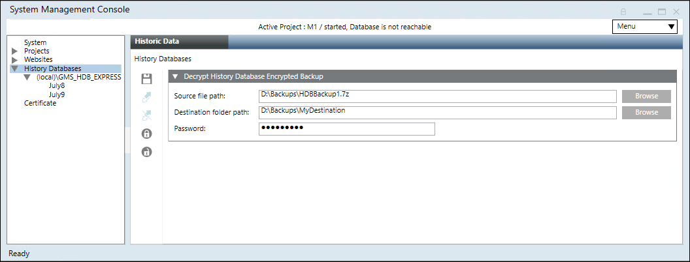
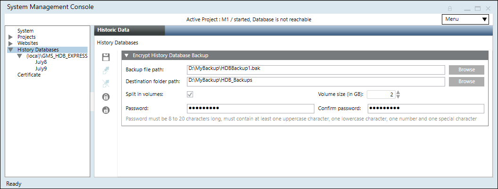
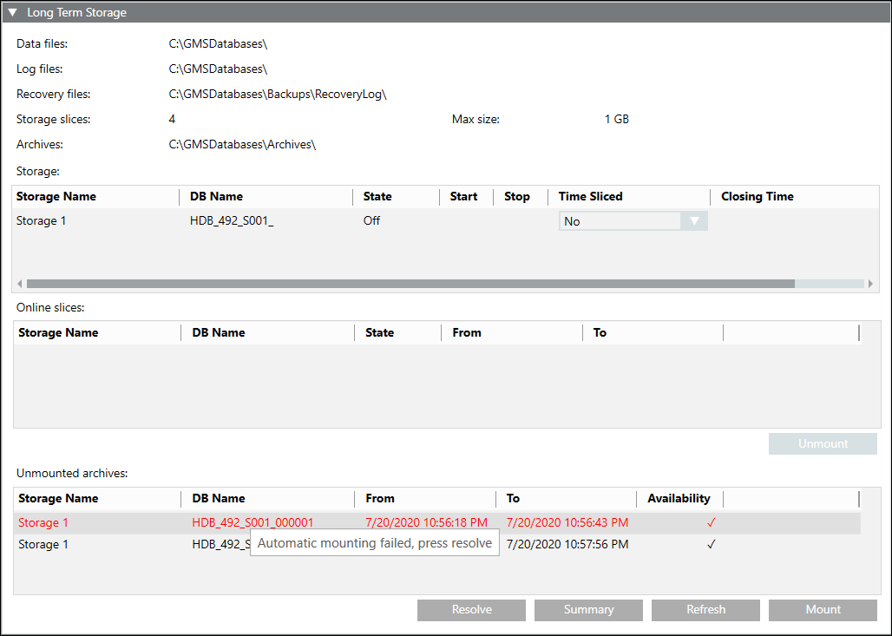
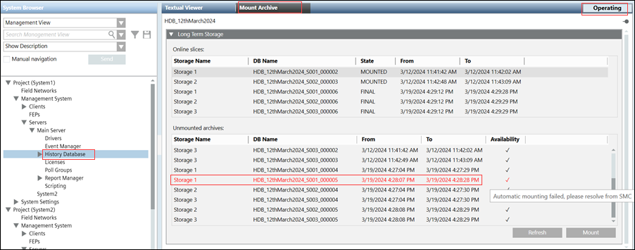

Additional HDB Toolbar Control Procedures
Select any of the procedures for operations related to the HDB toolbar.
Change HDB Properties
- A History Database is available and linked.
- In the SMC tree, select Database Infrastructure > [SQL server name] > [history database name].
- Click Edit
 .
. - You can change the following properties while the History Database is running:
- Database size (For more information, see Database Information)
Change the size of the HDB database:
‒ Maximum 10 GB for SQL Server Express
‒ Maximum 250 GB for SQL Server - Backup model (For more information, see Recovery Models)
Select the backup model Simple or Full for the history database. The backup model can be manually changed in both directions at any time. Long term storage databases are always in recovery model Full. - Backup folder (For more information, see Files and Paths)
Select the backup folder; backup file: E:\[MyBak]\HDB.bak - Recovery log path (For more information, see Files and Paths)
Select the recovery folder; recovery log path: E:\[MyRevoveryPath] - You can change the following users only when the History Database is stopped:
a. DB owner: Desigo CC SMC user who requires HDB owner rights. You can change it as required. The HDB owner must be different than the HDB user and the HDB service user.
b. DB user: Desigo CC project user who requires HDB user rights for read and write operations. You can change it as required in System Account Settings. See Settings Expander in SMC System Settings.
c. DB service user: Desigo CC service user who requires HDB service user rights for maintenance operations. You can change it as required in HDB Service Account Settings. See Settings Expander in SMC System Settings. - Click Save
 .
.
NOTE: In the case when the users are changed for save operation the SMC needs to be launched with a Windows account configured on SQL Server with sysadmin fixed server role. If the required privileges are not available a dialog box appears to provide a Windows account configured on SQL Server with sysadmin fixed server role.
- All edited data is saved.

NOTE:
Extending the size of the History database takes a few minutes. During this time, history data is saved to temporary storage (For more information, see HDB Exclusive Locked).
The size of the History database cannot be decreased after the size is extended.
Deactivate a Long Term Storage
- A Long Term Storage has been activated.
- In the SMC tree, select Database Infrastructure > [SQL server name] > [history database name].
- Click Edit.
NOTE: If the Edit icon is grayed out, a process might be running. Check the Task Info expander below to see which process is running. Wait until the process is finished. - Open the Long Term Storage expander.
- In the Storage table, select the Stop check box of the storage you want to deactivate.
- Click Save.
- The storage is deactivated when its state in the State column in the Storage table changes to
Off. - The state of the storage slices of this storage changes to
FINAL.
NOTE:
You can only deactivate but not delete a Long Term Storage.
Decrypting the History Database Encrypted Backup
Scenario: You have a history database backup or LTS backup archive which is compressed in 7z Archive (.7z) file type (and 7z.001 (7z.001) file type for split backup files), encrypted with the password stored at a known path on Server. You want to decrypt the history database backup using SMC.
Encrypted history database backup 7z Archive (.7z) files can also be manually decrypted using any decompression tool such as 7-Zip etc.
- SMC is launched.
- In the SMC tree, select Database Infrastructure.
- Click Decrypt History Database Backup
 .
. - In the Decrypt History Database Encrypted Backup expander that displays, do the following:
- Click Browse to select the compressed and encrypted backup from the path where you stored it or you can also paste the encrypted backup path in the Source file path field.
The encrypted history database backup file or LTS archive backup file must be only of 7z Archive (.7z) file type.
If you have split the backup then the you must select 7z.001 (7z.001) file type. - Click Browse to select the Destination folder path for storing the history database backup folder or paste the path where you want to decrypt the encrypted history database backup.
NOTE: If you do not have Write permission on the selected destination folder or if there is no sufficient disk space on the selected drive, or if the backup destination folder path is invalid then an error message displays and the history database backup is not decrypted at the selected destination folder.
For more information, see the ManagementLog.txt file located at the path
[installation drive:]/[installation folder]\GMSMainProject\log. - Enter the password that you entered during encryption.
- Click Save .
- The selected compressed, encrypted history database backup is decrypted and is stored at the specified destination folder.
You can now restore this project backup using the Restore Project icon. See Restoring and Upgrading the History Database.
icon. See Restoring and Upgrading the History Database.

NOTE:
If you want to select backup from the shared network path then you must paste the path in the source or destination path field. For example, \\ABC1PQR7c\Share_User\Backups\909MBSTR1_SLC1_HDB14.bak
Do not use the mapped drive when browsing.
Delete an HDB
- SMC is launched with a Windows account configured on SQL Server with sysadmin fixed server role. If the required privileges are not available a dialog box appears to provide a Windows account configured on SQL Server with sysadmin fixed server role.
NOTICE

Data Loss
When you delete the SQL database, all logged project data is lost irretrievably. Back up the data prior to running this action.
- A backup copy of the History Database was created and saved.
- In the SMC tree, select Database Infrastructure > [SQL server name] > [history database name].
- Click Drop
 .
. - Click Yes.
- The History Database is deleted and removed from the server.
NOTE 1:
You cannot delete an HDB if a Long Term Storage is activated. You must first deactivate the Long Term Storage.
NOTE 2:
If you do not delete the History Database using the SMC, the History Database continues to be displayed in the SMC tree. In this case, select the History Database and click OK.
Edit a Long Term Storage
- A Long Term Storage has been created.
- In the SMC tree, select Database Infrastructure > [SQL server name] > [history database name].
- Click Edit.
NOTE: If the Edit icon is grayed out, a process might be running. Check the Task Info expander below to see which process is running. Wait until the process is finished. - Open the Long Term Storage expander and edit the desired fields.
- Click Save.
Encrypt the History Database Backup
Scenario: You have a History Database backup stored at a known path on Server. You want to secure History Database during transport from any unauthorized access. Typically if the database is of high size (might be in some GB or may be in TB), you can split it during encryption.
- SMC is launched.
- You have sufficient disk space on the drive before you start history database backup encryption.
- In the SMC tree, select Database Infrastructure.
- Click Encrypt History Database Backup
 .
. - In the Encrypt History Database Backup expander that displays, do the following:
a. Click Browse to select the history database backup or LTS backup archive file (only .bak file type) from the backup folder path.
You can also paste the history database backup path in the Backup folder path field.
b. Click Browse to select the destination folder or paste the path where you want to keep the encrypted history database backup or LTS backup archive file. Default path is the Backup folder path that you have provided.
NOTE: If you do not have Write permission on the selected destination folder or the backup destination folder path is invalid then an error message displays and the history database backup is not encrypted at the selected destination folder.
For more information see, ManagementLog.txt file located at the path
[installation drive:]/[installation folder]\GMSMainProject\log.
c. Select the check box Split in volumes. Specify the split size in GB in the text field Volume size (in GB). For example 2 GB. Default is 1 GB.
d. Type the password and confirm it.
NOTE: The password must be 12 to 40 characters long and must contain at least one uppercase character, one lowercase character, one number, and one special character except the double quote (“) character. - Click Save .
- The selected history database backup is compressed in 7-Zip format using Advanced Encryption Standard (AES) 256 standard, encrypted with the password that you have given and is stored at the specified destination folder.
You must decrypt this encrypted history database backup before restoring it.
For information on Decrypting the History Database Backup, see History Infrastructure Procedures.

NOTE 1:
You can close SMC as well as select another node in SMC, while database encryption is in progress.
The encryption continues in background and the encrypted history database backup is available upon completion at the destination path that you have provided.
NOTE 2:
If you want to select backup from the shared network path then you must paste the path in the source or destination path field. For example, \\ABC1PQR7c\Share_User\Backups\909MBSTR1_SLC1_HDB14.bak
Do not use the mapped drive when browsing!
Mount an Archived Long Term Storage Slice from SMC
- A Long Term Storage slice has been archived.
- In the SMC tree, select Database Infrastructure > [SQL server name] > [history database name].
- Open the Long Term Storage expander.
- Select the Long Term Storage slice you want to mount in the Unmounted archives section.
- Click Mount.
- The Long Term Storage slice appears in the Online slices section and has the state
Mounted. - If the HDB Service user of the unmounted slice (backup) does not match the current HDB service user configured on the System node of the SMC then the mount operation might fail with the message ( highlighted in red) as shown.

- Select the Long Term Storage slice seen in red in the Unmounted archives section and click Resolve.
- The Long Term Storage slice appears in the online slices section and has the state
Mounted.
NOTE: For resolve operation the SMC needs to be launched with a Windows account configured on SQL Server with sysadmin fixed server role. If the required privileges are not available a dialog box appears to provide a Windows account configured on SQL Server with sysadmin fixed server role.
Mount an Archived Long Term Storage Slice from the Installed Client
- Under the Security tab > Application Rights expander > History Database, you have selected Configure application rights to perform the mount operation in the Installed Client.
For more information, see History Database, under User Administration > Application Rights. - In SMC, a Long Term Storage slice that you want to mount is archived and available in the Unmounted archives section.
- System Manager is in Operating Mode.
- In the System Browser, select Management View.
- Select Project > Management System > Servers > Main Server > HistoryDatabase.
- In the Mount Archive tab, perform the following steps:
- Open the Long Term Storage expander.
- Select the Long Term Storage slice you want to mount from the Unmounted archives section.
- Click Mount.
- Click Refresh.
- To update the list of Online slices and their State, click Refresh.
- The Long Term Storage slice appears in the Online slices section and has the State
Mountedin Installed Client as well as in SMC. The changes in the Installed Client are synchronized with SMC. - In the Installed Client, once the Long Term Storage slice is mounted a log entry for this activity is displayed in the Detailed Log tab.
- After performing mount operation, if you execute any reports such as Trend Report, Activity Report, and Alarm Report, you can retrieve the historical data from the Long Term Storage slice that is mounted.
- In distributed system, a Long Term Storage slice can be mounted in the partner system.
- The Long Term Storage slice mount functionality of the Installed Client is also possible for the remote SQL Server HDB database.
- If HDB service, is not running and you click Mount in Installed Client, then the changes can be seen only in the SMC with the task in
PlannedState. - If the HDB Service user of the unmounted slice (backup) does not match the current HDB service user configured on the System node of SMC then the mount operation might fail as shown in the below image.
To resolve this, go to SMC, select the Long Term Storage slice seen in red in the Unmounted archives section, and click Resolve. 
- (Optional) To unmount a Long Term Storage slice of Installed Client, see Unmount a Mounted Long Term Storage Slice from SMC.
Purge HDB Data Content
Service technicians typically use this function after commissioning a project. Deleting the database content deletes all logged commissioning data as well. As a result, only customer data is logged from this point forward.
NOTICE
Data Loss
When you purge the SQL database, all logged project data is lost irretrievably. Therefore, backup the data prior to purging.
Only data in the HDB (Short Term Storage (STS)) will be deleted, and not the data in the archives (Long Term Storage (LTS)). Data in archives will only be accessible for forensic purposes.
- You have created the backup copy of your History Database.
- In the SMC tree, select Database Infrastructure > [SQL server name] > [history database name].
- Click Purge
 .
. - Click Yes to delete the content of the History Database.
- The content of your History Database is deleted.
- The database remains available on the server.
NOTE:
History data generated during purge are newly added to the History Database following the purge completion (For more information, see HDB Exclusive Locked).
Reduce HDB Data Content
You can reduce data content for individual data groups.
- Click Statistics
 .
. - Select the Shrink Archives expander.
- Select the corresponding Date for each data group you want to delete from the Threshold column.
NOTE: For example, if a date is set to 1.1.2013, all dates until 31.12.2012/23:59:59 are deleted. - Click Shrink.
- Data from all data groups are deleted up to the set date.
Unmount a Mounted Long Term Storage Slice from SMC
- A Long Term Storage slice has been mounted.
- In the SMC tree, select Database Infrastructure > [SQL server name] > [history database name].
- Open the Long Term Storage expander.
- Select the Long Term Storage slice you want to unmount in the Online slices section.
- Click Unmount.
- The Long Term Storage slice appears in the Unmounted archives section.